# 李宏毅 2023 春机器学习课程
# ChatGPT 原理刨析
ChatGPT 不是联网的，并且目前的回答对于 2021 年以后的信息不太准确。
ChatGPT 所做的就是 文字接龙（语言模型），获得文字的几率，所以每一次的输出结果可能并不相同，并且在每次选出一个词之后，再将该词语加入到输入之后，继续进行处理，获得下一个文字，直到获得 end。
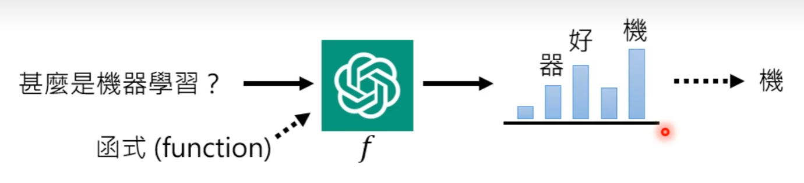
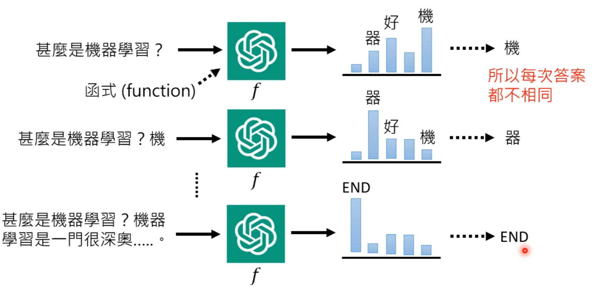
为了使 ChatGPT 具有根据历史记录进行回答的能力，其实每一次都会将历史记录也和当前的问题一起丢入输入当中
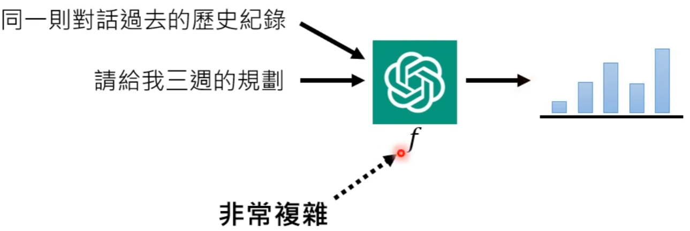
这个函数 的参数大概会有 1700 亿个参数。
ChatGPT 的训练过程：
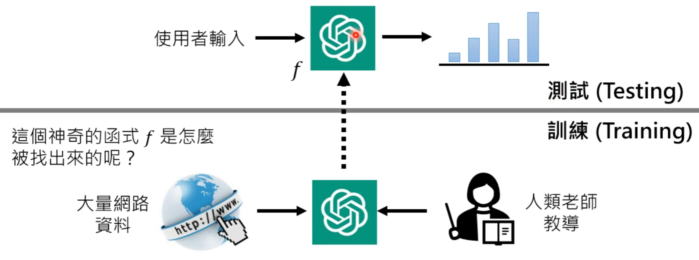
# ChatGPT 关键技术 预训练
预训练 （Pre-train）又称为 自督导式学习 （Self-supervised Learning），其所得到的模型又被称为 基石模型 （Foundation Model）。
ChatGPT 即 基于 Transformer 预训练的生成式聊天（Chat Generative Pre-trained Transformer）。
# 0x01 预训练
网络上每一段文字都可以教机器做文字接龙，GPT 就是使用的网络上的内容进行训练。
GPT-1、GPT-2、GPT-3 在模型上逐渐更大，性能也逐渐更好，从 100 多 M 到 175G，但这个时候没有人来进行干预，所以 GPT 模型的输出有时候是无厘头的。
GPT 通过督导式训练后才变成了 ChatGPT，经过 微调 （finetune）。
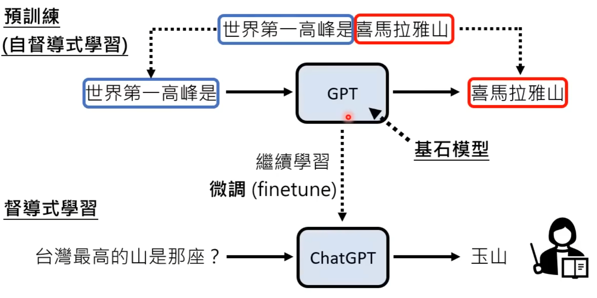
# 0x02 预训练的帮助
在多种语言上做预训练，只要教某一种语言的某一个任务，可以自动学会其他语言的同样任务。
# 0x03 增强式学习
给与的反馈比较简单，并且适用于答案不确定的情况，只需要给反馈就好了。
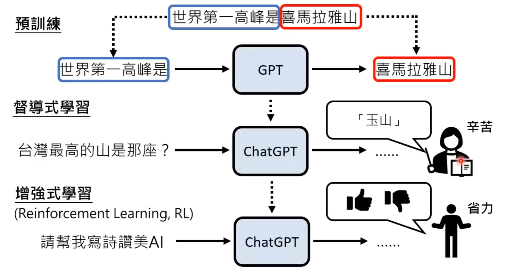
# ChatGPT 带来的研究问题
# 0x01 如何精准提出问题
对 ChatGPT 进行催眠（Prompting）。
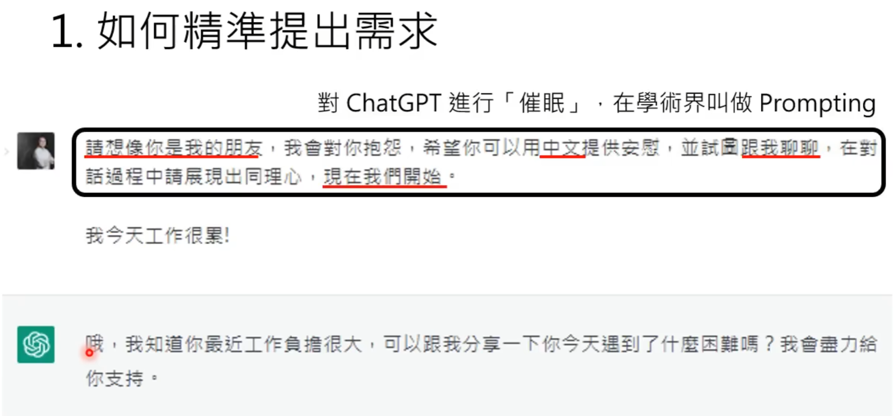
# 0x02 如何更正错误
# 0x03 如何侦测 AI 生成
# 0x04 不小心泄露秘密
Machine Unlearning
# 用 ChatGPT 玩文字冒险游戏
首先对 ChatGPT 进行催眠
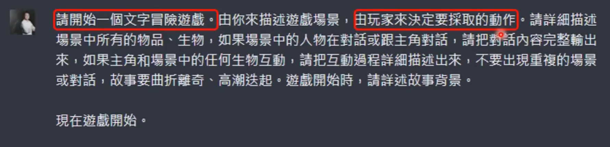
再加上游戏插图
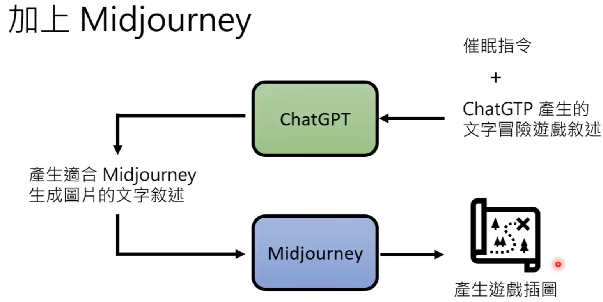
# ChatGPT 是怎么炼成的
# GPT 社会化的过程
ChatGPT 和 Insruct GPT 很像，通过 Instruct GPT 就可以知道 ChatGPT 是怎么被训练出来的。
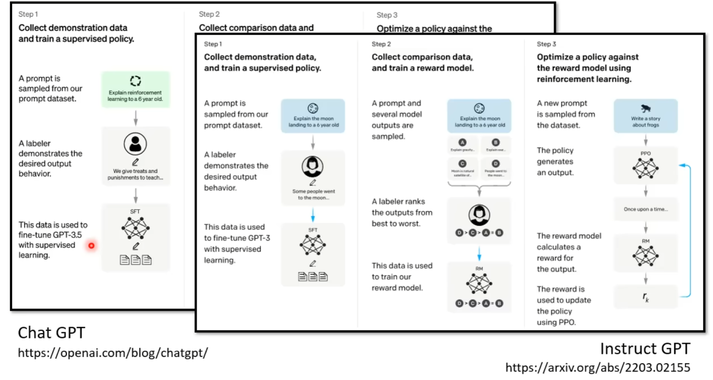
# ChatGPT 学习的四个阶段
# 学习文字接龙
不需要人工介入，GPT 自己在网络上学习，GPT 学到的是概率，从概率分布中进行随机抽取，因而 GPT 的每一次输出都是不一样的。
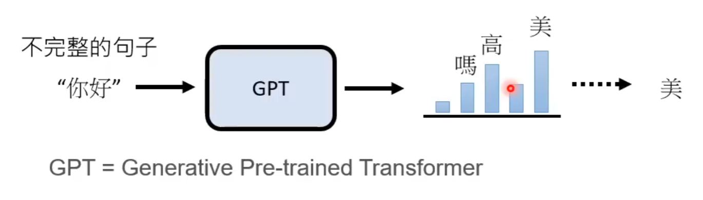
文字接龙就足够用于进行 问题回答 了，但是回答往往没有目的性。
# 人类老师引导文字接龙的方向
找人来思考想问 GPT 的问题，并人工给出正确答案（告诉 GPT 以后多看这些类似的有益的文句，不要去网络上看一些有的没的）。不需要穷尽所有的问题，我们只要告诉 GPT 人类的偏好，大概提供几个范例就够了。
# 模仿人类老师的喜好
GPT 只要学习人类对哪一类回答的喜爱程度，不需要正确答案，只要知道人类对于答案的选择，就可以通过构建 Teacher Model 学习，自己得知，在众多回答中，哪一个答案是较好的，而哪些答案是差劲的。
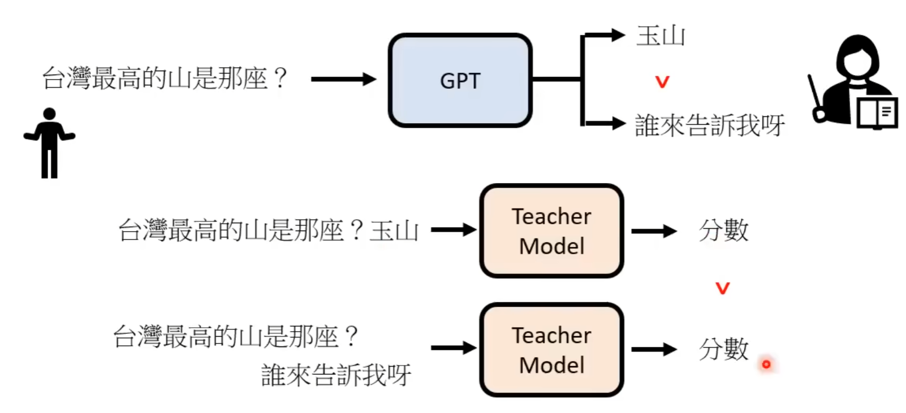
# 用增强式学习向模拟老师学习
ChatGPT 进行自问自答，学习应该给出那种回答更正确。
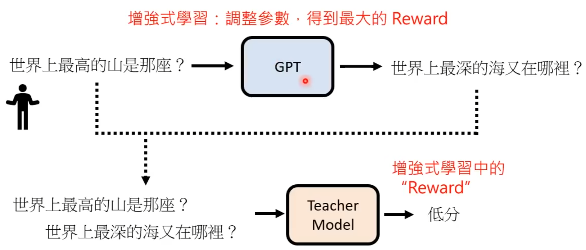